WEB DEVELOPER PORTFOLIO · 2026
Backend / Full-stack Developer
Java와 Spring Boot로 API·인증·데이터를 구성하고, Next.js와 배포 환경까지 한 서비스의 요청 흐름을 따라간 작업 기록입니다.
기준 시점 2026-10-13 · 포트폴리오 서비스 HEAD 9fbcd64 · 자동매매 HEAD 52d1aaf
https://swportfolioservices.com
https://github.com/KimSunWooo
kssgss@gmail.com · 010-7382-4100
01 · PROFILE
백엔드 중심의 풀스택 개발을 기본 포지션으로 둡니다. 화면, API, 데이터베이스, 캐시, 배포가 어디서 갈라지는지를 문제 단위로 설명하는 쪽에 무게를 두었습니다.
경력과 학력은 운영 중인 포트폴리오 서비스의 공개 이력 API에 등록된 내용입니다. 별도 재직 증명으로 대조하지는 않았습니다.
조이튠 · 웹 개발 · 2022.02 – 2023.12
등록 내용: Java, Spring, JavaScript, MySQL, React, MariaDB, Linux. 제약사 맞춤 웹의 로그인·회원·관리자 화면, 스마트 우편함 관리 화면과 서버 점검 자동화.
경기대학교 수학과 학사 · 2016.03 – 2021.08
Java 21Spring Boot 4.1Spring SecurityJWT JPAMySQLRedisNext.js 16 React 19TypeScriptZustandDocker NginxAWS EC2 · RDS · S3GitHub Actions
02 · PROJECTS
| 프로젝트 | 역할 관점 | 현재 상태 |
|---|---|---|
| 웹 포트폴리오 서비스 KimSunWooo/portfolio |
Spring Boot API, Next.js, 인증, 장바구니, 캐시, EC2 배포 | 공개 서비스 운영 중. 장바구니 동기화의 DB 멱등은 로컬 작업 트리에만 있음 |
| KIS 자동매매 KimSunWooo/Auto-Trading-system |
Next.js 웹앱, 주문 상태, 멱등성, Worker | Cursor 바이브코딩. KIS PAPER에서 개발·검증 중. REAL 주문은 잠금 |
| AI 투자 판단 에이전트 KimSunWooo/Auto_Trading_AI_Agent |
주문 실행과 분리된 판단 API를 의도한 독립 저장소 | 이번 환경에서 저장소 코드를 열지 못함. 구현 완료로 적지 않음 |
| Python 영상·검출 | 프레임 버퍼, 프로토콜, 파이프라인, HTTP/WebSocket | 웹 직무의 보조 사례. 모델 성능은 다루지 않음 |
분석에 사용한 자동매매 클론은 2026-10-12 커밋 52d1aaf의 shallow clone입니다. 포트폴리오 서비스는 로컬 main 9fbcd64와, 그 위에 있는 미커밋 장바구니 변경을 구분했습니다.
03 · PORTFOLIO SERVICE
정적 소개 페이지가 아니라 이력·프로젝트·상품·장바구니·커뮤니티를 API로 읽고 관리자 권한으로 고치는 서비스입니다. 상품 데이터는 인증, 소유권, 캐시, 결제 상태 전이를 다루기 위한 모듈입니다.
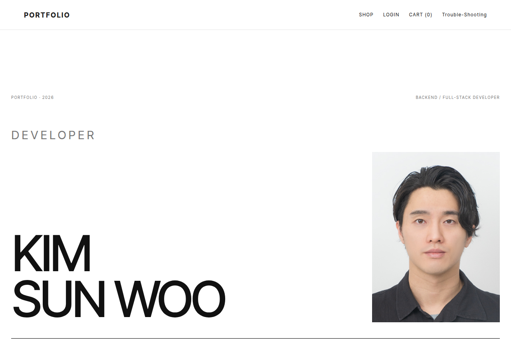
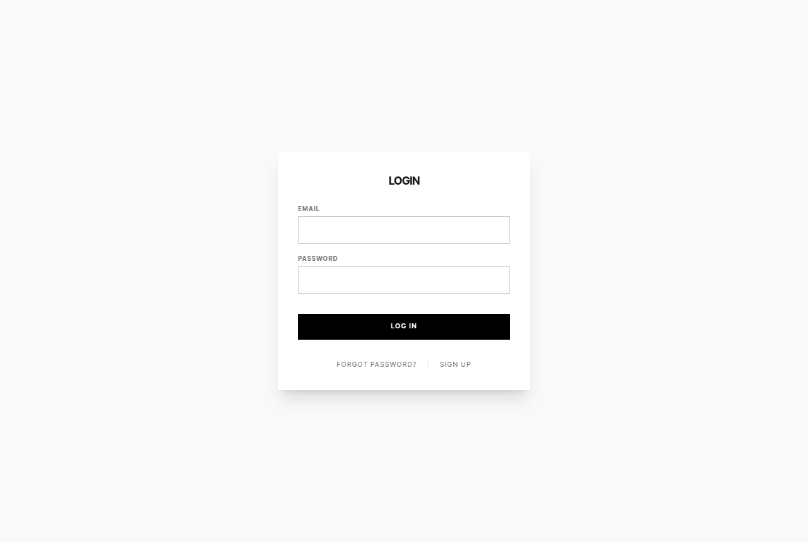
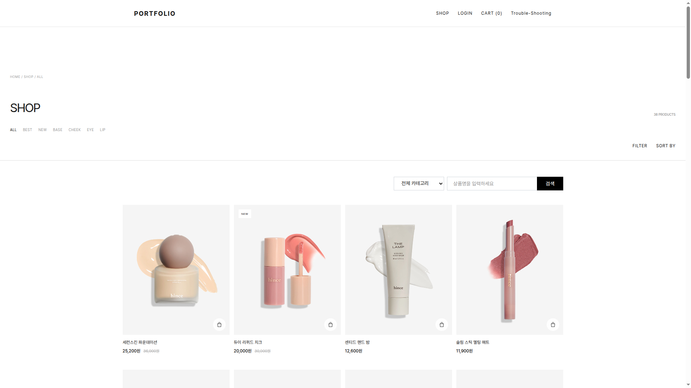
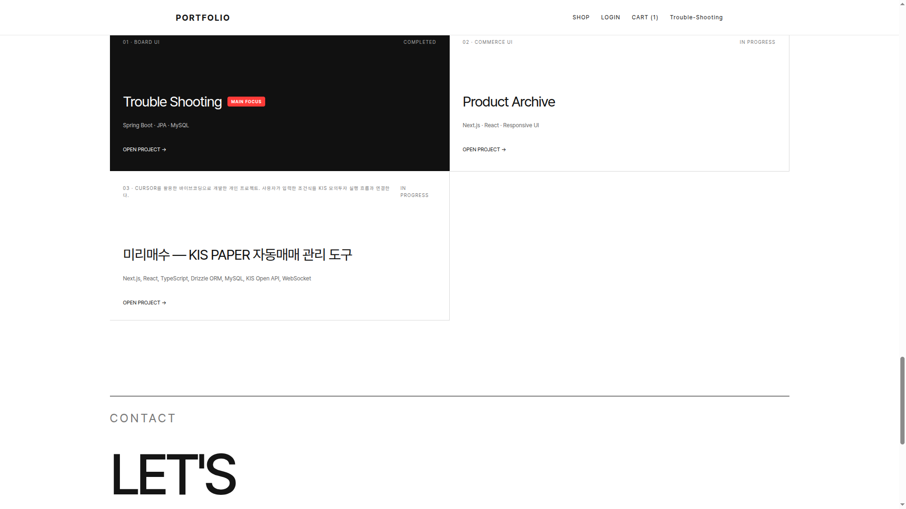
03 · ARCHITECTURE
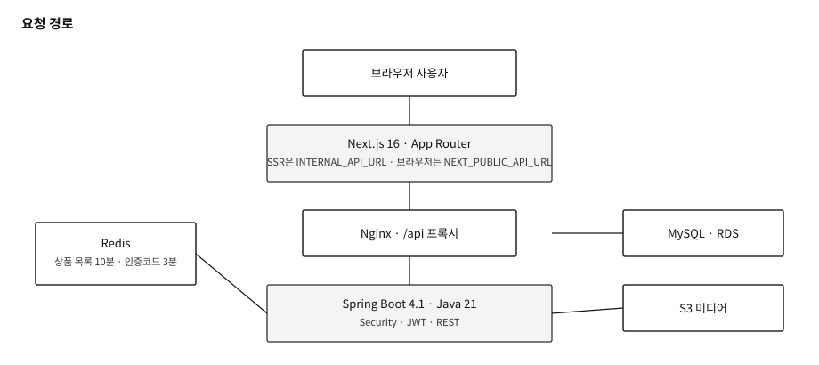
이번 문서 작업에서 GitHub Actions 배포를 다시 실행하지는 않았습니다. 위 내용은 workflow와 스크립트에 있는 절차입니다.
03 · AUTH AND DATA
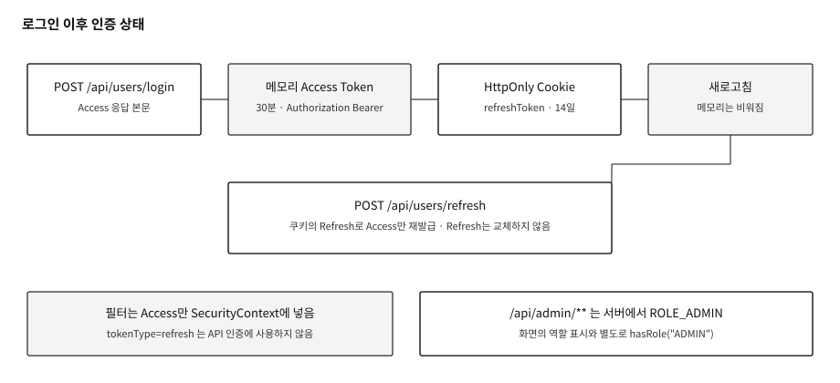
새로고침하면 메모리의 Access Token이 사라집니다. 관리자 화면만 역할을 믿으면 API는 통과할 수 있습니다.
쿠키가 없거나 Refresh 검증에 실패하면 401입니다. 프론트는 복구 실패와 비로그인을 구분해 안내합니다. ensureAccessToken
TokenUseTest, AdminAccessWebTest가 역할과 Refresh 거부를 검사합니다. 이번 세션에서 Gradle을 다시 실행하지는 않았습니다.
사용자는 이메일 unique. 장바구니는 사용자당 하나. 상품·이미지·상세는 JPA로 나뉘고, 목록 조회는 SALE 상태만 반환합니다. 장바구니 항목 조회는 소유 이메일을 확인합니다.
03 · CACHE, CART, PAYMENT
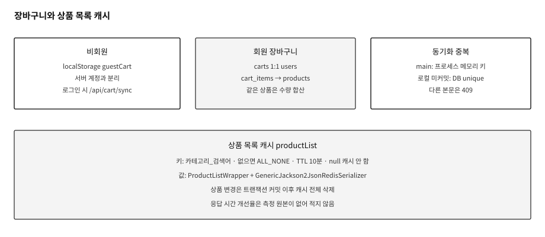
상품 목록은 같은 조건으로 반복 조회됩니다. 캐시 이름은 productList, 키는 정규화한 카테고리와 검색어입니다. 제네릭 리스트가 타입 없이 복원되는 문제를 피하려고 응답을 ProductListWrapper로 감싸고, Redis 전용 ObjectMapper에 JavaTimeModule과 타입 정보를 넣었습니다. 상품 변경은 커밋 이후에 캐시를 비웁니다. ProductListCacheTest가 키와 삭제 시점을 검사합니다.
비밀번호 재설정 코드는 별도 키 AUTH_CODE: 로 3분만 저장합니다. 상품 캐시와 용도가 다릅니다.
main 9fbcd64: Idempotency-Key가 있으면 그 프로세스 메모리 안에서만 한 번 합산합니다. 프로세스가 바뀌면 같은 키가 다시 더해질 수 있습니다.
로컬 미커밋: cart_sync_requests unique (user_email, operation, request_key)와 본문 해시로 재전송을 거절하거나 같은 요청으로 인정합니다. CartSyncMySqlTest가 있습니다. 운영 DB 반영과 main 커밋은 이 문서 시점에 확인하지 못했습니다. 완료된 운영 기능으로 적지 않습니다.
PaymentService는 금액이 100원이 아니면 거절합니다. 승인 응답이 요청과 같아야 DONE을 기록하고, 이어서 자동 취소합니다. 승인 실패 시 DONE을 쓰지 않습니다. 취소가 실패하면 DONE 행은 남기되 완료 응답으로 끝내지 않습니다. 다른 사용자 결제 키는 403입니다. 화면에도 자동 취소와 장바구니 유지가 적혀 있습니다.
03 · FRONTEND AND DEPLOY
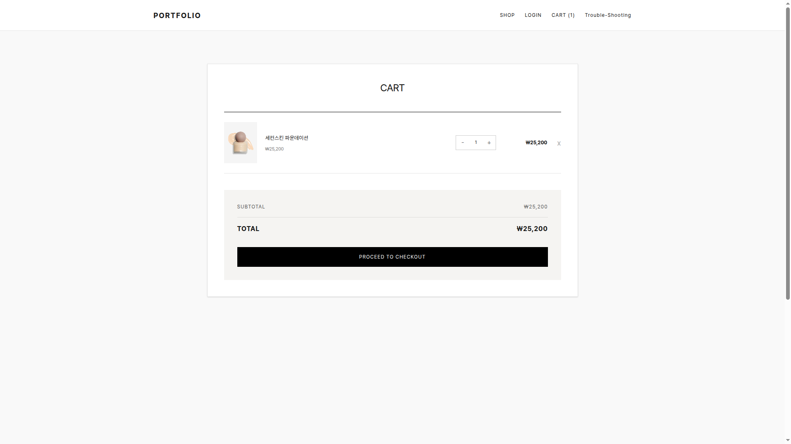
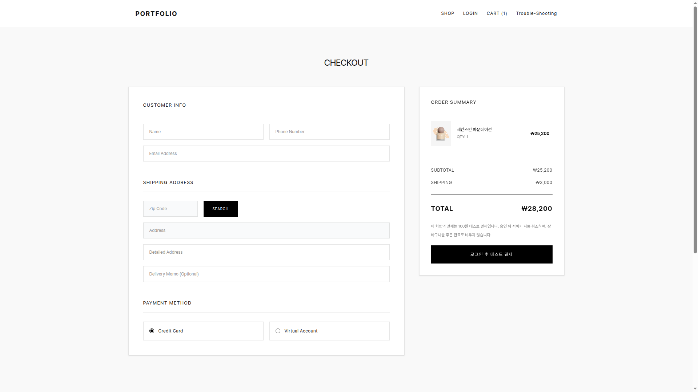
브라우저의 localhost와 Next.js 컨테이너의 localhost는 다른 곳입니다. SSR이 컨테이너 자신을 8080으로 치면 Connection Refused가 납니다. 렌더 위치에 따라 API 주소를 나누고, 배포 스크립트는 SSR이 백엔드 컨테이너로 붙도록 주소를 넘깁니다. 이미지 URL도 브라우저가 해석할 수 있는 공개 주소로 맞춥니다.
Access Token은 메모리에만 있습니다. 새로고침 뒤에는 Refresh 쿠키로 Access를 다시 받고, 그 토큰으로 보호 API를 호출합니다. 관리자 여부는 서버 규칙이 최종입니다. FormData를 보낼 때는 Content-Type을 지워서 브라우저가 boundary를 붙이게 합니다. frontend/src/lib/api.ts
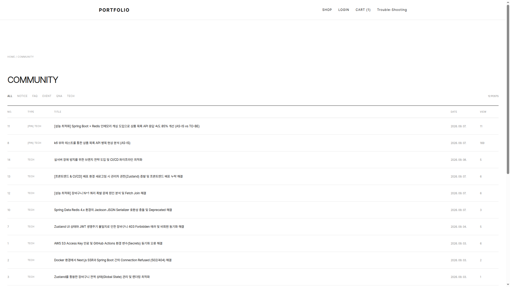
04 · AUTO TRADING
개발 방식: Cursor AI를 활용한 바이브코딩 기반 개인 프로젝트
현재 상태: KIS PAPER 환경에서 개발 및 검증 진행 중
투자 전략 소개가 아니라, 로그인·계좌 연결·조건 입력·주문 상태·백그라운드 루프를 가진 Next.js 웹앱으로 봅니다. 패키지명은 mirae-autobuy, Next.js 16.3.5, React 19, Drizzle ORM, MySQL입니다. 별도 Express 서버는 없고 app/api Route와 src/ 런타임이 서버 처리입니다.
운영 사이트의 프로젝트 카드가 이 저장소를 Cursor 바이브코딩 개인 프로젝트로 소개합니다. 저장소 README 자체에는 “바이브코딩”이라는 문장은 없습니다. 줄 단위로 AI가 생성한 코드와 사람이 고친 코드를 가르는 기록은 이번 분석에서 찾지 못했습니다.
코드와 문서에서 확인할 수 있는 작업물은 요구 경계, PAPER/REAL 잠금, 주문 상태 모델, Worker lock, startup sync, 그리고 npm test용 테스트 파일입니다. 검증 문서 docs/VERIFICATION_WORKER_ALLOCATION_2026-10-12.md는 당시 커밋 8f76b69에서 642 pass / 0 fail / 21 skip을 적고 있습니다. 그 명령을 이번 환경에서 다시 실행하지는 않았습니다.
이 환경에는 자동매매 서버를 띄우지 않았습니다. KIS 주문 API도 호출하지 않았습니다. 대시보드 스크린샷은 없어 아래 요청 문서에 따로 적습니다.
04 · ORDER INTEGRITY
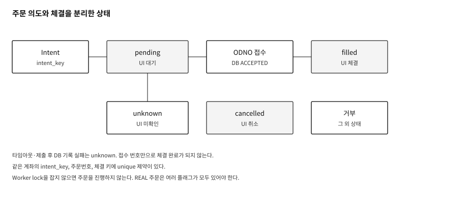
pending은 대기, unknown은 미확인, 체결 수량이 주문 수량보다 적으면 부분체결입니다. 주문번호만 받은 상태를 DB에서는 ACCEPTED로 두고 FILLED와 구분합니다. 탭 이름과 빈 목록 문구는 “체결”에 가깝게 적혀 있어, 대기 주문이 있어도 문구만 보면 체결 내역처럼 읽힐 여지는 있습니다. 배지 값은 미체결과 완료를 나눕니다.
04 · VERIFICATION
| 구분 | 근거 | 이번 문서에서의 의미 |
|---|---|---|
| 단위·모의 | FakeBroker, mock fetch, tsx --test 파일 다수 | 상태 전이, lock, unique, REAL 잠금을 코드로 고정 |
| 검증 문서의 일괄 실행 | 2026-10-12 문서, 커밋 8f76b69, 642 pass | 그 시점의 기록. HEAD 52d1aaf에서 재실행하지 않음 |
| PAPER API | README와 opt-in 스크립트. 예: 국내 VTS 주문번호 서술 | 클론 안에 실행 로그는 없음. 실전 매매 증거가 아님 |
| REAL | 코드 경로는 있고 기본값은 잠금 | 운영한 것으로 적지 않음 |
| 장시간 실행 | README의 soak·WebSocket 항목은 조건부이거나 미완료 표현 | 완료된 무중단 운영으로 적지 않음 |
긴급 정지 UI는 cancel과 flatten을 함께 호출합니다. README가 말하는 stop과 flatten의 분리와 화면 동작이 완전히 같지는 않습니다.
05 · AI AGENT
개발 방식: Cursor AI를 활용한 바이브코딩 기반 독립형 프로젝트
지원자가 명시한 개발 방식입니다. 저장소 코드를 이번 환경에서 열지 못해, 아래는 생산 측 구현 완료 서술이 아닙니다.
https://github.com/KimSunWooo/Auto_Trading_AI_Agent 는 인증 없는 GitHub API에서 404였습니다. 비공개이거나 이름이 다를 수 있습니다. 이 머신에는 GitHub CLI와 credential helper가 없었습니다. 소스, 테스트, Fail-closed 구현, TradeProposal 생성 코드는 보지 못했습니다. 자동매매와 붙어서 운영 중이라고 적지 않습니다. 실계좌 주문도 적지 않습니다.
자동매매 저장소 docs/AI_CONTRACT.md 는 별도 프로세스가 제안을 만들고, 자동매매가 받아서 주문 여부를 결정하는 경계를 적습니다. 스키마 이름은 ai.trade-proposal.v1 입니다.
이 계약은 자동매매 저장소에 있는 소비 측 문서입니다. 에이전트 저장소가 같은 계약을 구현했는지는 미검증입니다. 비공개 저장소를 포트폴리오에 넣으려면 공개 범위를 정한 뒤 다시 분석해야 합니다.
06 · ADDITIONAL
모델 구조와 정확도는 적지 않습니다. 웹 개발과 닿는 동시성, 통신 계약, 파이프라인만 한 장으로 둡니다. 서로 다른 저장소입니다.
| 사례 | 코드에서 본 것 | 상태 |
|---|---|---|
| 안전모 동작 프로토타입 Motion-detected-system ec0737c |
LatestFrameBuffer가 lock 아래 프레임을 최대 1장만 유지하고, 새 프레임이 오면 읽지 않은 프레임을 버립니다. 처리가 느릴 때 큐가 쌓이지 않게 하는 구조입니다. | 대시보드는 데모 시나리오입니다. 정식 서비스가 아니라 착수 전 프로토타입으로 분류합니다. 객체 기반 착용 검출기는 더미입니다. |
| 돌봄 UI DolBom · 4d11607 |
PyQt 클라이언트와 AI를 분리합니다. 제어는 길이 헤더와 JSON, 영상은 JPEG RTP/UDP 초안입니다. 카메라 역할은 CameraHub가 나눕니다. | 프로토콜 상태는 draft, 기본은 데모입니다. 병원 연동이나 녹화 완료로 보지 않습니다. |
| 검출 메인 서버 deep-learning-project e6565dd |
카메라, 메인, AI, UI가 WebSocket과 HTTP로 나뉩니다. 프레임은 JSON 헤더와 JPEG입니다. 카메라 ID가 여러 개입니다. | DolBom은 환경 변수로 이 서버의 미리보기·결과 소켓을 볼 수 있습니다. 선택 연동 코드이며, 통합 운영 완료로 적지 않습니다. |
| 차량 번호 파이프라인 vehicle_detect_system 7e906a2 |
검출, 분류, 번호판, OCR을 단계로 잇고 실패 시 빈 OCR 결과를 남깁니다. CLI가 output/results.json을 씁니다. | 이 저장소 안에 HTTP 인식 서버나 DB 적재는 없습니다. |
07 · ENGINEERING
| 문제 | 선택한 처리 | 확인 |
|---|---|---|
| SSR과 브라우저의 API 호스트가 다름 | 렌더 위치별 URL, Nginx upstream, 공개 이미지 주소 | api.ts, deploy.sh. 커뮤니티 글은 당시 장애 기록 |
| Refresh로 관리자 API가 열릴 수 있음 | tokenType과 role로 Access만 인증, admin 경로는 서버 역할 검사 | SecurityConfig, TokenUseTest, AdminAccessWebTest |
| 목록 캐시가 타입을 잃고, 수정 전에 비워질 수 있음 | Wrapper, 전용 Jackson, 커밋 후 삭제, TTL 10분 | RedisConfig, ProductListCache. 속도 수치는 제외 |
| 비회원 장바구니 재전송이 수량을 중복 합산 | main은 프로세스 내 키. 로컬 작업은 DB unique와 본문 해시 | 후자는 미커밋. 운영 반영은 미확인 |
| 테스트 결제를 성공 주문으로 오해 | 100원만 허용, 승인 실패 시 DONE 없음, 취소 실패는 완료 응답 아님 | PaymentService, 체크아웃 문구, PaymentServiceTest |
| 주문 타임아웃을 체결로 기록 | unknown, unique intent, worker lock, 기동 시 재분류 | 자동매매 소스와 테스트. REAL 운영 증거 없음 |
| 영상 프레임이 처리보다 빨리 쌓임 | 최신 1장만 유지하고 나머지를 drop | 안전모 프로토타입의 LatestFrameBuffer |
공통으로 둔 기준은 경계에서 상태를 나누고, 애매한 결과를 성공으로 승격하지 않는 것입니다. 화면 문구와 서버 상태가 어긋나면 서버 상태와 테스트를 우선합니다.
08 · LINKS
| 이름 | 주소 | 볼 내용 |
|---|---|---|
| 웹 서비스 | swportfolioservices.com | 이력, 상품, 장바구니, 커뮤니티 |
| 포트폴리오 저장소 | github.com/KimSunWooo/portfolio | Spring Boot, Next.js, 배포 |
| 자동매매 | github.com/KimSunWooo/Auto-Trading-system | PAPER 웹앱, 주문 정합성. 바이브코딩 |
| 안전모 프로토타입 | github.com/KimSunWooo/Motion-detected-system | 최신 프레임 버퍼 |
| 돌봄 UI | github.com/KimSunWooo/DolBom | UI와 통신 초안 |
| 검출 서버 | github.com/KimSunWooo/deep-learning-project | HTTP·WebSocket 경계 |
| 차량 파이프라인 | github.com/KimSunWooo/vehicle_detect_system | 단계별 JSON 결과 |
김선우 · Backend / Full-stack · 2026
관리자 화면과 자동매매 대시보드, AI 에이전트 저장소는 이번 PDF에 포함하지 않았습니다. 필요한 추가 캡처는 SCREENSHOT_REQUESTS.md에 있습니다.